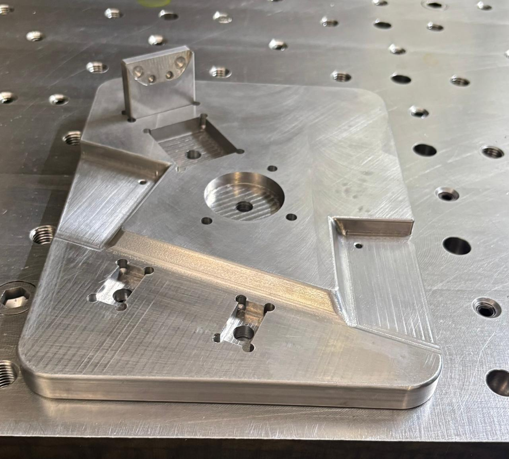

Usinagem de Peças sob Medida em Itaquaquecetuba – SP

A RamaTex Usinagem atua com excelência no mercado de usinagem de precisão, ferramentaria e manutenção mecânica. Especializada na fabricação e recuperação de componentes mecânicos sob desenho ou amostra, atendemos diversos segmentos industriais com máxima agilidade.
Contamos com uma estrutura tecnológica preparada para realizar serviços de torneamento mecânico, fresagem e furação industrial. Nosso compromisso é entregar lotes de peças seriadas ou sob demanda com rigor dimensional absoluto e acabamento superior.
Seja para o desenvolvimento de novos dispositivos mecânicos ou para a manutenção de maquinários, a RamaTex é a parceira estratégica ideal para otimizar a produtividade e eficiência da sua empresa.
Solicitar Cotação Industrial